{kind=link}
Basis + site
Code and zoning matrix, permit requirements, setbacks, access, drainage, and utility routing.
Owner coordination set
Detached garage apartment · Richmond, Virginia
Project at a glance
Option F has advanced from layout study to a schematic construction and engineering basis. Start with the full plan set, then explore the design sources.
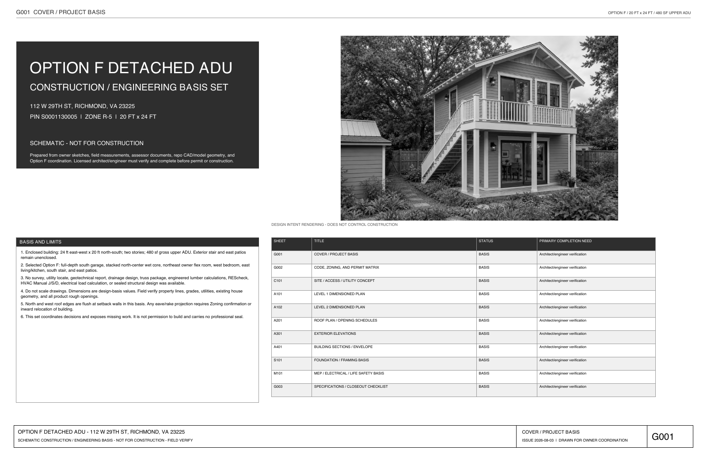
11 × 17 · 11 sheets · 1.6 MB
Dimensioned plans, site and utility concept, roof and opening schedules, four elevations, two sections, structural framing basis, MEP coordination, and permit closeout checklist.
Open complete PDF ↗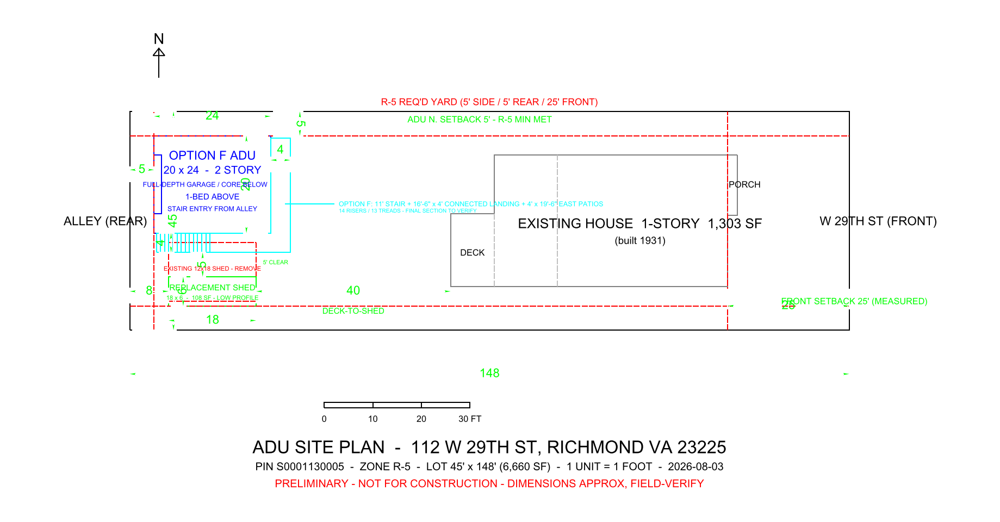
20 × 24 ft enclosed footprint, 5-ft north setback, south stair and continuous landing, full 4-ft east patios, and an 18 × 6 replacement shed.
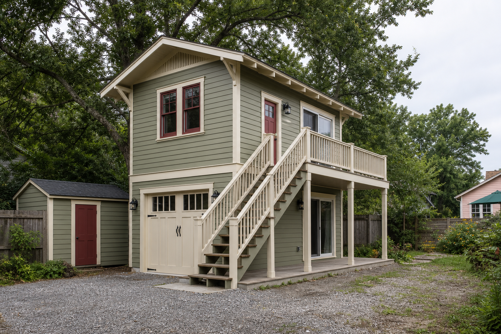
Single-run south stair, flat upper landing, conventional apartment entry, and the terrace wrapping toward the yard.
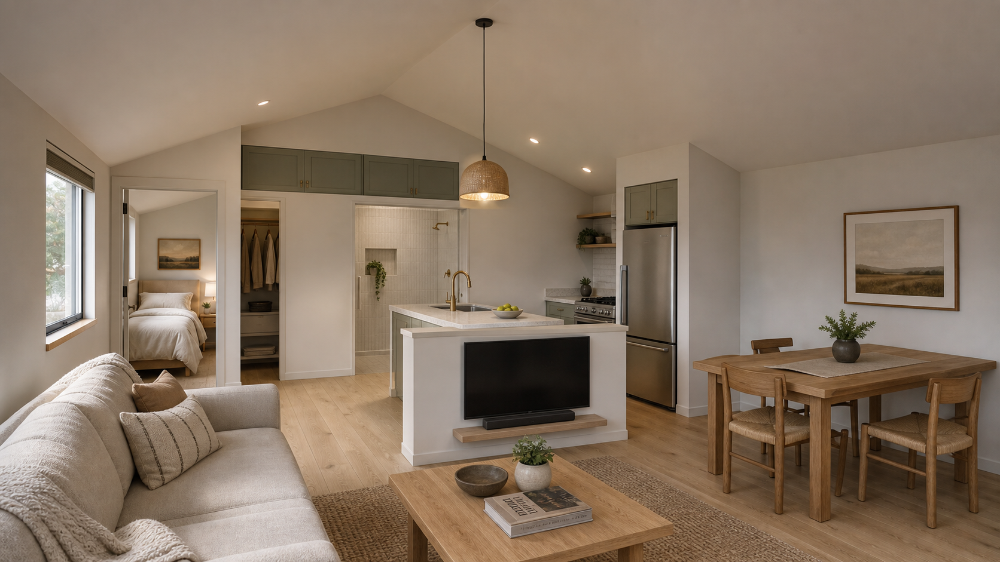
See the full-depth garage below and the compact apartment above as plan-informed interior concepts.
Schematic construction + engineering basis
The set coordinates known geometry, current Richmond design criteria, preliminary assemblies, structural load paths, MEP intent, and every unresolved permit item.
Open 11-sheet PDF ↗Code and zoning matrix, permit requirements, setbacks, access, drainage, and utility routing.
Dimensioned levels, roof, schedules, four elevations, sections, envelope, stair, and fire separation.
Foundation, floor and roof framing concepts, preliminary member basis, lateral system, and deferred engineering.
Plumbing riser, electrical single line, HVAC and ventilation basis, alarms, energy, and inspection hold points.
A coordinated owner/architect/engineer handoff and scope-control document.
Survey, soil basis, written zoning rulings, sealed engineered products, REScheck, load calculations, and trade permits.
Not for construction. Do not scale. Field verification and approved permit drawings govern.
Current concept · Option F
Two-story, 20 × 24 ft enclosed structure at the 5-ft north setback. The south stair finishes on a continuous 4-ft-deep landing that turns openly into 4 × 19-ft-6-in east patios. A low-profile 18 × 6 maximum shed envelope leaves 5 ft clear before the stair.
North setback Current draft uses the full 5-ft R-5 setback; no north-side variance is assumed.
Replacement shed Remove the current 12 × 18 structure; rebuild as a low-profile 18 × 6 shed on the southern 5-ft setback with 5 ft clear to the stair.
Elevated exterior circulation Architect and engineer to resolve posts, lateral bracing, footings, drainage, flashing, and a true 4-ft clear walking width after guards.
Survey and utilities Confirm property lines, grades, utility routes, stormwater path, and fire-department access before fixing the footprint.
Owner measurements and public records only. The coordinated plan set remains schematic and not for construction.
Plans under consideration
Option F develops the preferred exterior circulation and corrects the wet core: powder room below, bath above, and laundry in upper seasonal storage. It remains a concept for architect and engineer validation.
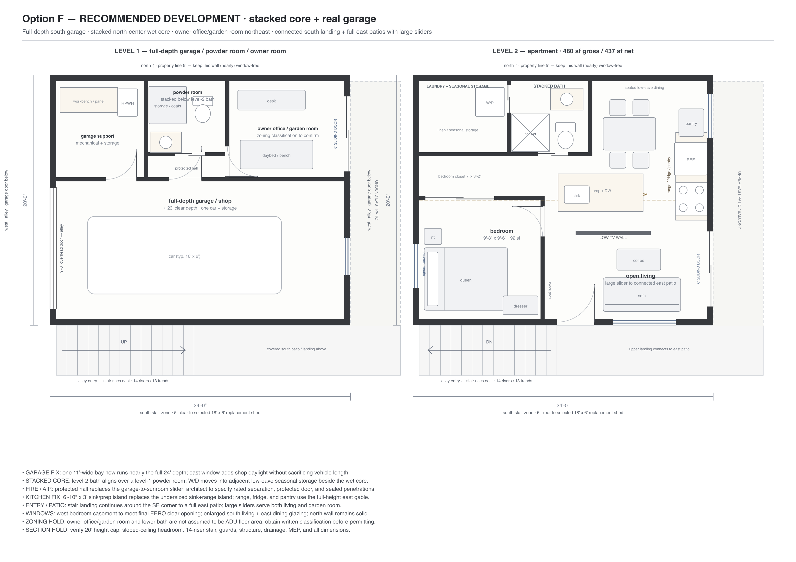
Continuous stair landing · 4-ft east patios · sliders both levels · stacked plumbing
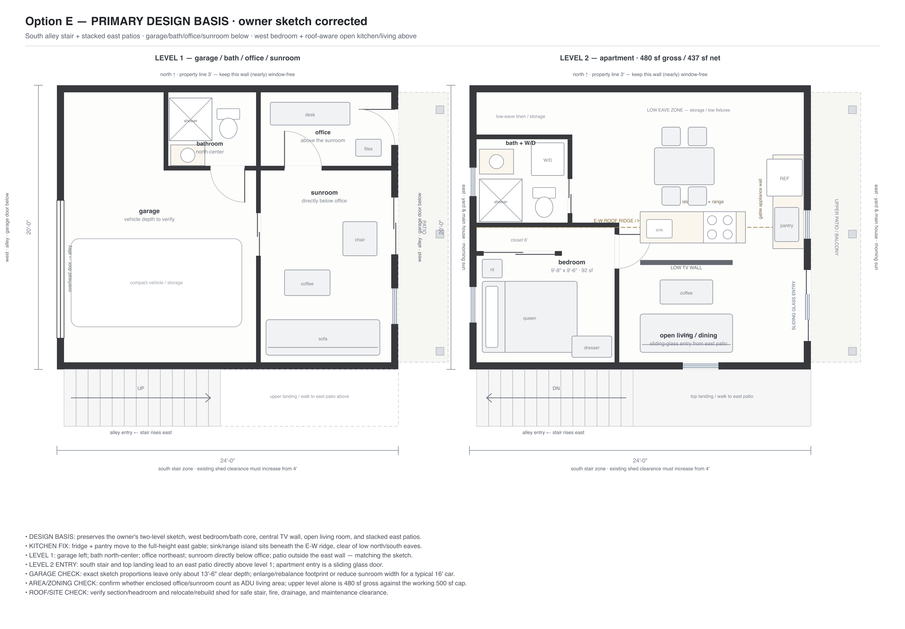
Previous design basis · retained for comparison
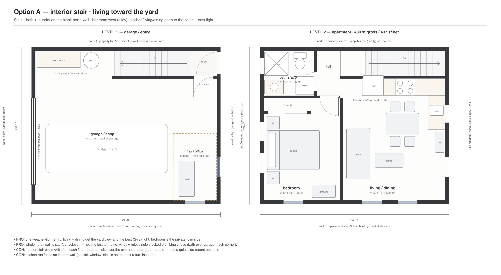
Interior stair · living toward yard
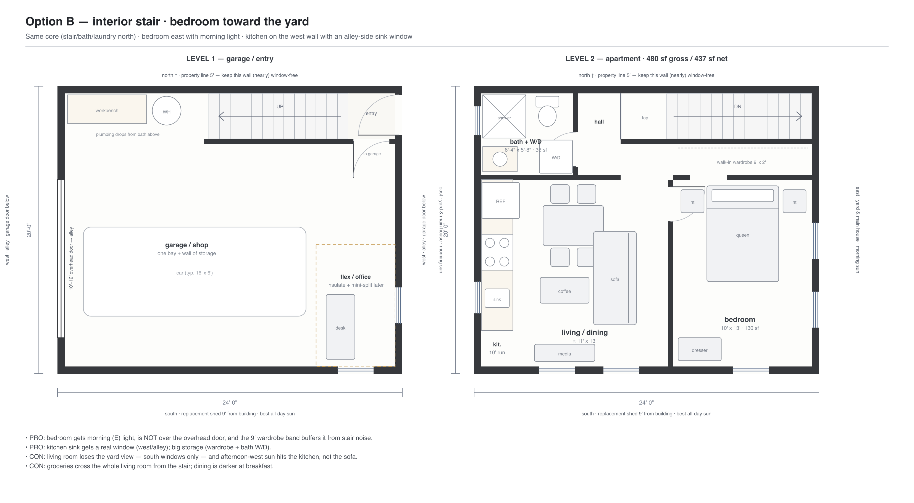
Interior stair · bedroom toward yard
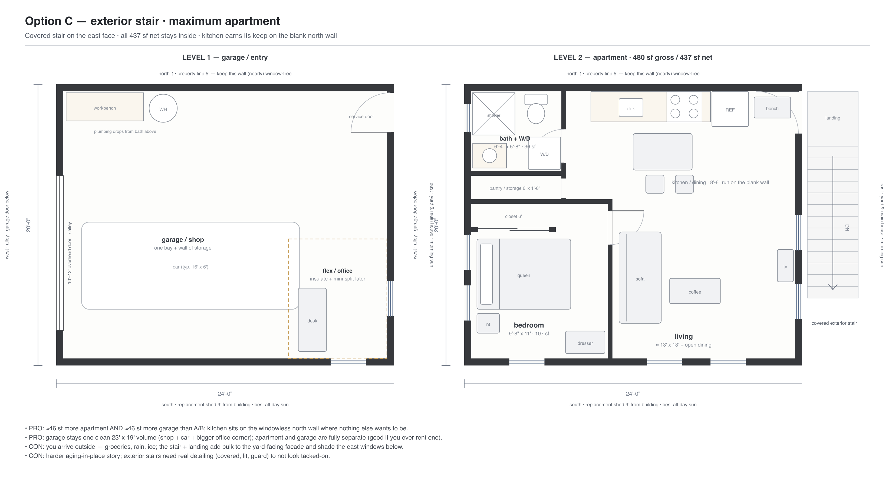
Exterior stair · more interior area
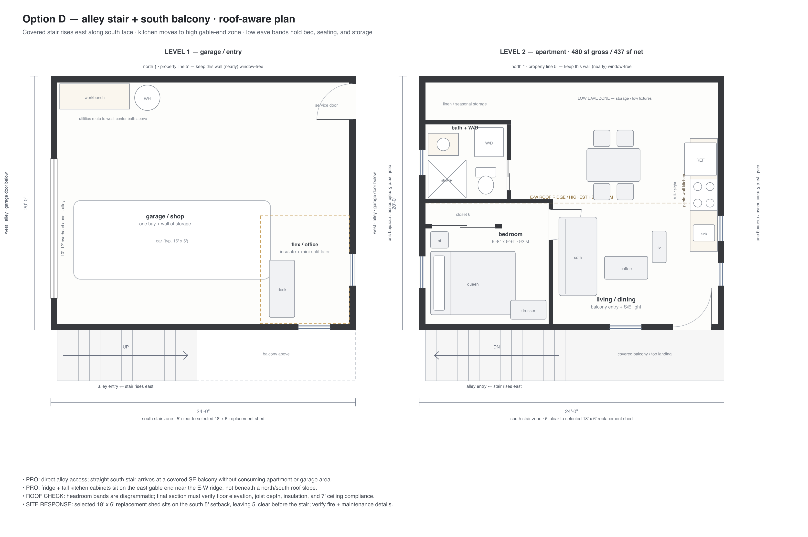
South alley stair · roof-aware kitchen
Lower room classification Confirm how the owner office/garden room is counted under ADU and accessory-building rules; do not assume it is separate habitable floor area.
Fire separation Detail the garage-to-building separation, protected hall and door, sealed penetrations, alarms, and mechanical ventilation.
Roof section Prove usable headroom at bedroom, bath, kitchen, and dining edges while staying under the planned 20-ft ridge.
Stair and guards Verify rise/run, headroom, landings, handrails, guard openings, and the open southeast transition to the patio.
Openings Coordinate structure, water management, energy performance, privacy, egress, and safety glazing for the large sliders and windows.
Laundry access Confirm the pocket-door route through the bath is acceptable, or reserve enough storage depth for an alternate hall connection.
Plan-informed visualizations
These renderings translate Option F's current room relationships into perspective. They illustrate spatial intent and material character; dimensioned plans and future permit drawings govern.
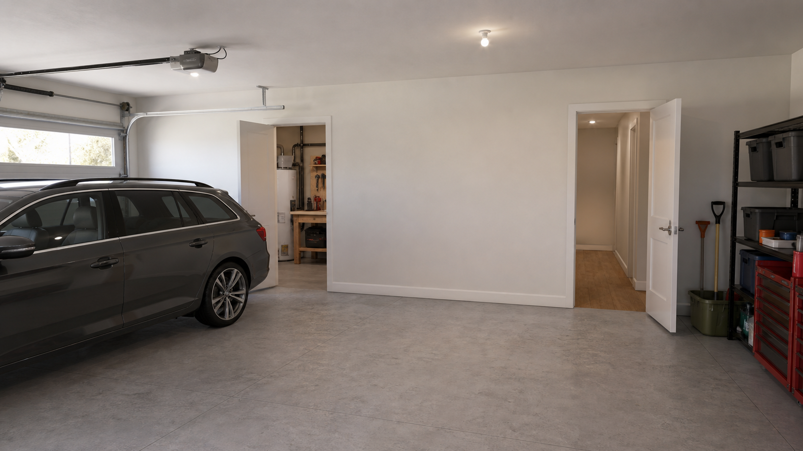
Concept imagery only. Floor-plan geometry, roof section, rated assemblies, structure, MEP, clearances, and finishes require architect and engineer verification.
Design direction
Olive or muted green lap siding, a legible roof, generous eaves, divided-light windows, warm accents, and a carriage-style garage door. Craftsman influence without imitation.
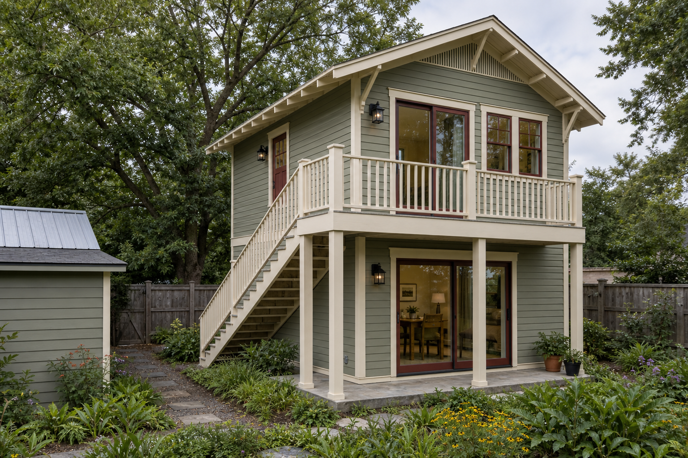
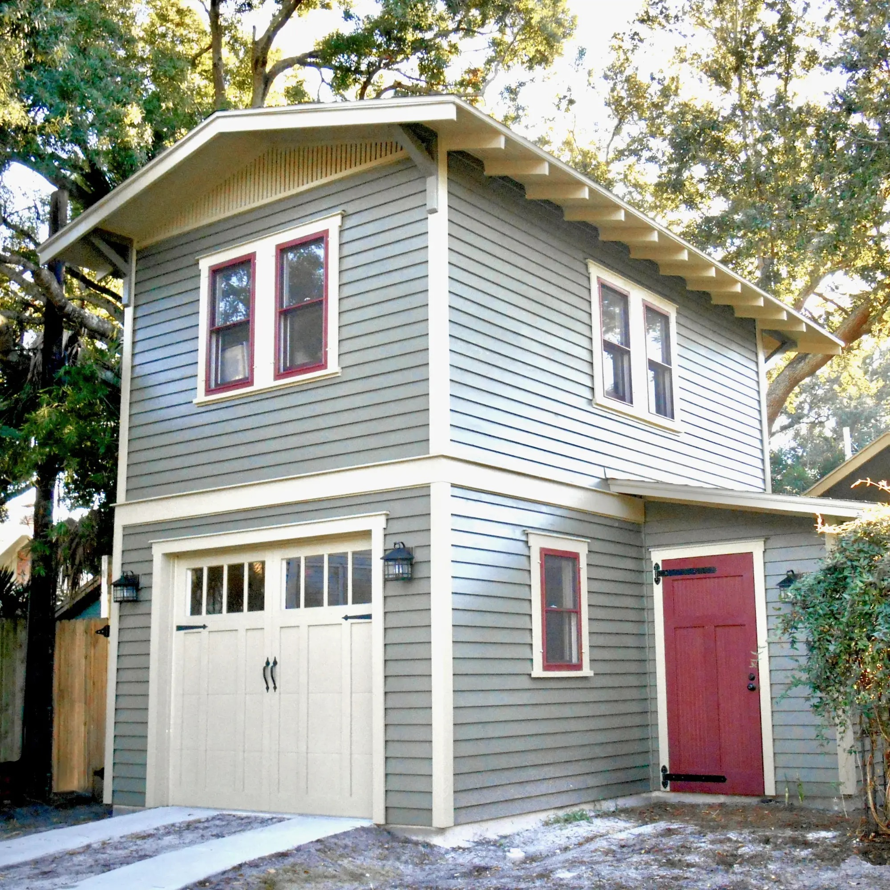
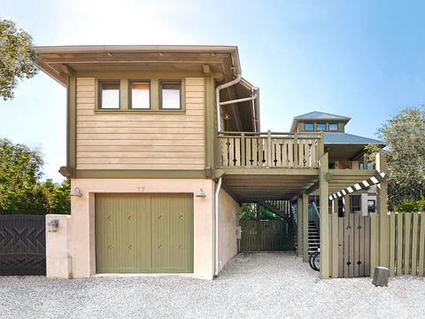
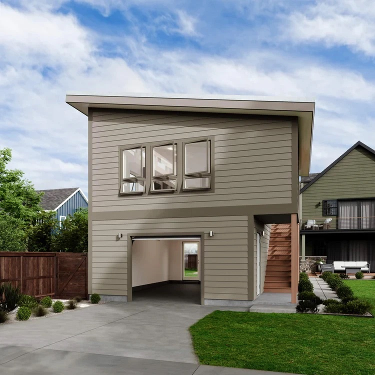
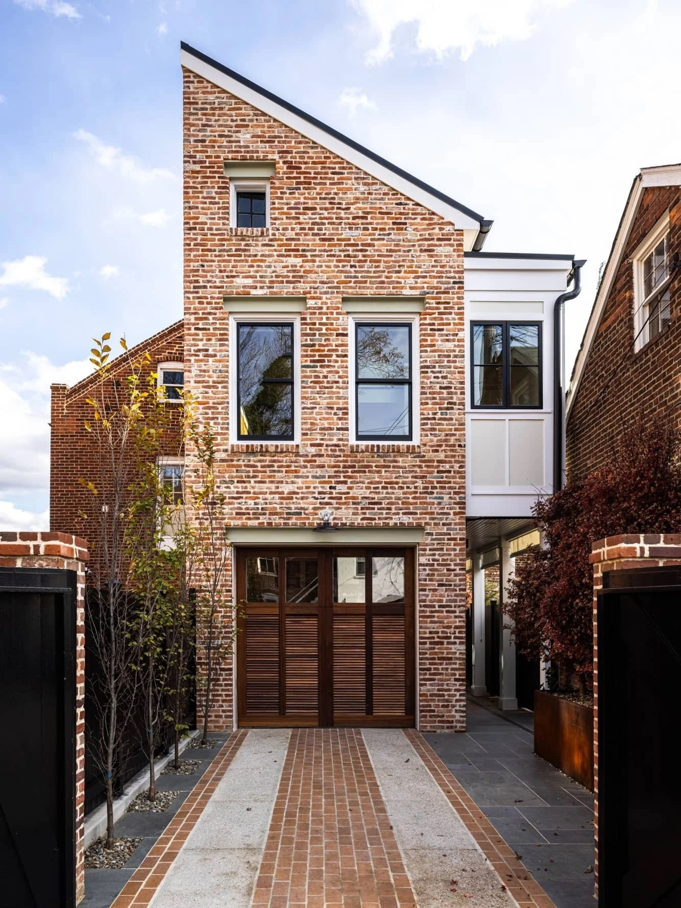
Downloadable working set
CAD and model files are true-scale working references. PDFs and public records provide markup context and traceability.
{kind=link}
{kind=link}
{kind=link}
{kind=link}
{kind=link}
{kind=link}
{kind=link}
{kind=link}
{kind=link}